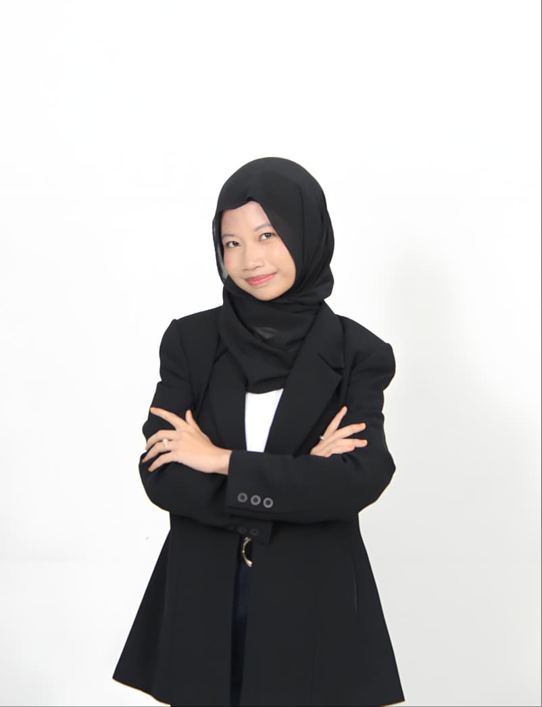

| Keahlian | Tingkat | Keterangan / Tools |
|---|---|---|
| Jaringan Komputer | Menengah | VLAN, Routing, Cisco Packet Tracer |
| Cybersecurity (CTF & Osint) | Menengah | Open Source Intelligence, Capture The Flag Player |
| Perancangan Basis Data | Menengah | SQL, ERD, Stored Procedure, Trigger |